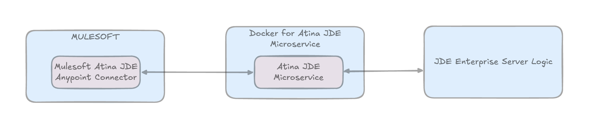

Quick Setup Overview
Mulesoft Atina JDE Anypoint Connector
Version
Release Note
ApiDoc
Functional Doc
Samples
1.0.0
Download
jde-atina-connector-demo.jar
Atina JDE Microservice
Version
Release Note
Installation Guide
1.0.7
Docker for Atina JDE Microservice
Version
Release Note
Installation Guide
1.0.4
See Mulesoft Atina JDE Anypoint Connector Installation Guide
JDE Atina Build Manager
Version
User Guide
1.0.1
JDE Atina Panel Manager
Version
User Guide
1.0.0